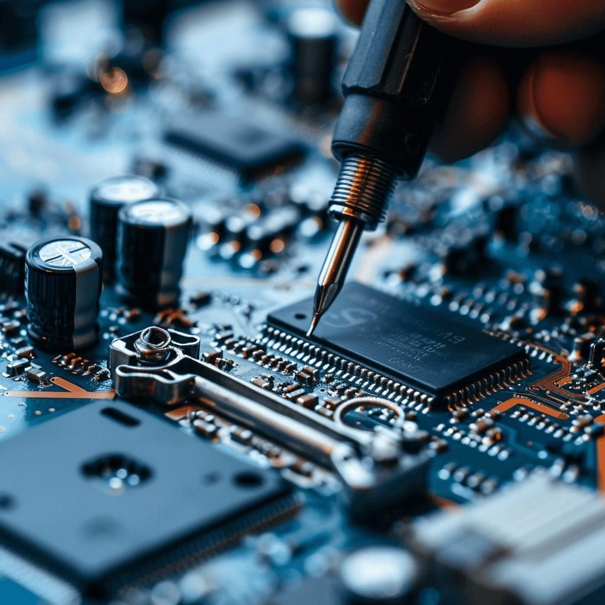

01
Embedded Systems
Design computer systems inside everyday products, combining microcontrollers, sensors, firmware, and electronics.
Tools and careers: Arduino, STM32, real-time operating systems, smart appliances, embedded systems engineer.